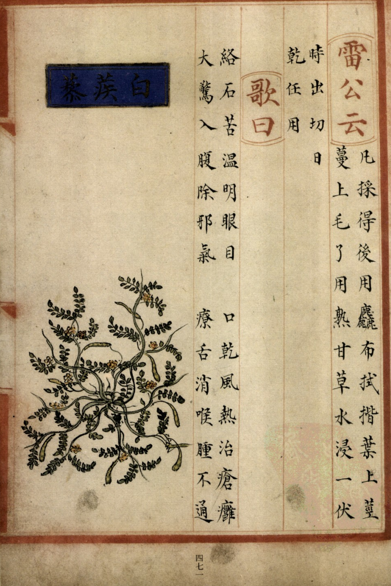
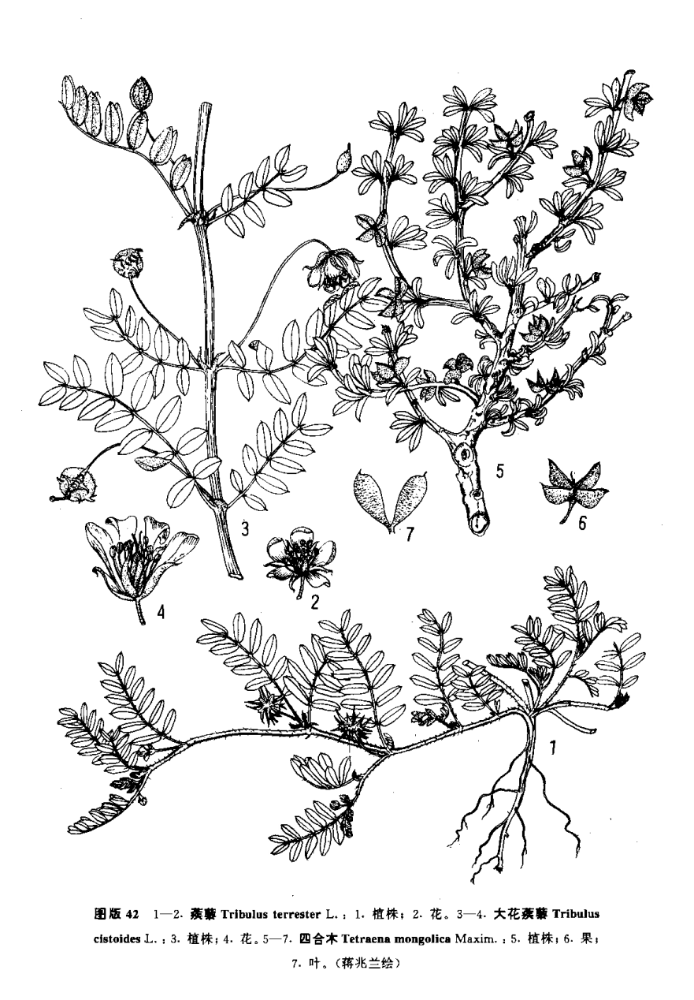

出现篇目
别名 蒺藜、旁通（《本经》）、屈人（《本经》）、止行（《本经》）、豺羽（《本经》）、升推（《本经》）
古代记载 《毛诗故训传》
茨，蒺藜也。（《毛传》注《墙有茨》、《楚茨》）
《毛诗正义》
正义曰：“茨，蒺藜”，《释草》文也。郭璞曰：“布地蔓生，细叶，子有三角刺。”是也。（《毛诗正义》疏《楚茨》）
《诗集传》
茨、蒺藜也。 蔓生、细叶。 子有三角、刺人。（《诗集传》集注《墙有茨》）
茨、蒺藜也。（《诗集传》集注《楚茨》）
《本草纲目》
《别录》曰∶蒺藜子生冯翊平泽或道旁。七月、八月采实，曝干。
颂曰∶冬月亦采之，黄白色。郭璞注《尔雅》云∶布地蔓生，细叶，子有三角，刺人，是也。又一种白蒺藜，今生同州沙苑，牧马草地最多，而近道亦有之。绿叶细蔓，绵布沙上。七月开花黄紫色，如豌豆花而小。九月结实作荚，子便可采。其实味甘而微腥，褐绿色，与蚕种子相类而差大。又与马 子酷相类，但马 子微大宗奭曰∶蒺藜有二等∶一等杜蒺藜，即今之道旁布地而生者。开小黄花，结芒刺。一种白蒺藜，出同州沙苑牧马处。子如羊内肾，大如黍粒，补肾药，今人多用。风家惟用刺蒺藜也。
时珍曰∶蒺藜叶如初生皂荚叶，整齐可爱。刺蒺藜状如赤根菜子及细菱，三角四刺，实有仁。其白蒺藜结荚长寸许，内子大如脂麻，状如羊肾而带绿色，今人谓之沙苑蒺藜。以此分别。"
当代记载 《中国植物志》
蒺藜（Tribulus terrestris），蒺藜科、蒺藜属植物。一年生草本，茎平卧，枝长20-60 厘米。小叶对生，矩圆形或斜短圆形。花腋生，花梗短于叶，花黄色。花期5-8月，果期6-9月。全国各地有分布。生于沙地、荒地、山坡、居民点附近。全球温带都有。

<补遗雷公炮制便览>

<中国植物志>